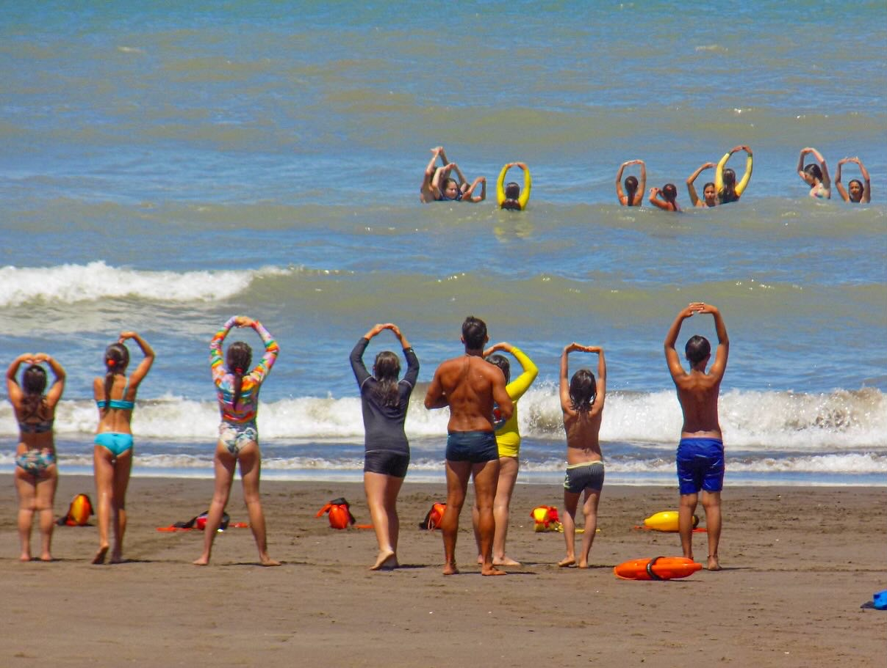

Conocé nuestras propuestas y el estado de desarrollo de cada una.

Programa estacional · Verano 2027
Temporada Educativa 2027
Una experiencia de verano para niñas, niños y adolescentes de 5 a 17 años. Integra movimiento, juegos, experiencias marítimas, prevención y exploración del ambiente costero.
Propósito: aprender en contacto con el mar, desarrollar autonomía y fortalecer el cuidado de las personas y del entorno.
Conocé la temporada e inscribite →

Línea educativa · Proyección anual
El mar como aula
Experiencias para escuelas e instituciones que integran lectura de la playa, prevención acuática, conocimiento del ambiente costero y aprendizaje al aire libre.
Propósito: acercar herramientas para interpretar el entorno marítimo y relacionarse con él de manera segura y responsable.
Conocé educación y prevención →

Propuesta socioambiental · En desarrollo
Guardianes del Ambiente
Una iniciativa proyectada para que adolescentes y referentes comunitarios conozcan los desafíos ambientales de la costa y participen en acciones de cuidado y conservación.
Propósito: impulsar participación juvenil, conocimiento situado y proyectos de acción socioambiental con aliados técnicos.
Conocé Guardianes del Ambiente →
Línea deportiva · Proyección anual
Salvamento Deportivo todo el año
Una línea de formación y entrenamiento que integra habilidades acuáticas, preparación física, cooperación, técnica y cultura de prevención.
Propósito: ampliar las oportunidades de práctica y desarrollo deportivo más allá del verano.
Descubrí Salvamento Deportivo →